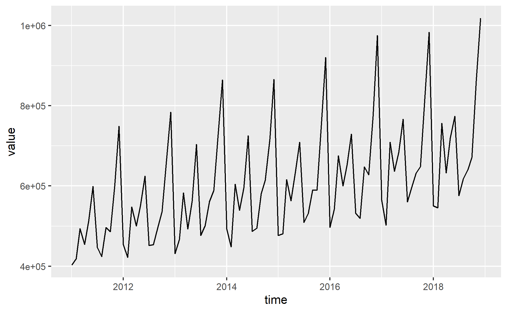
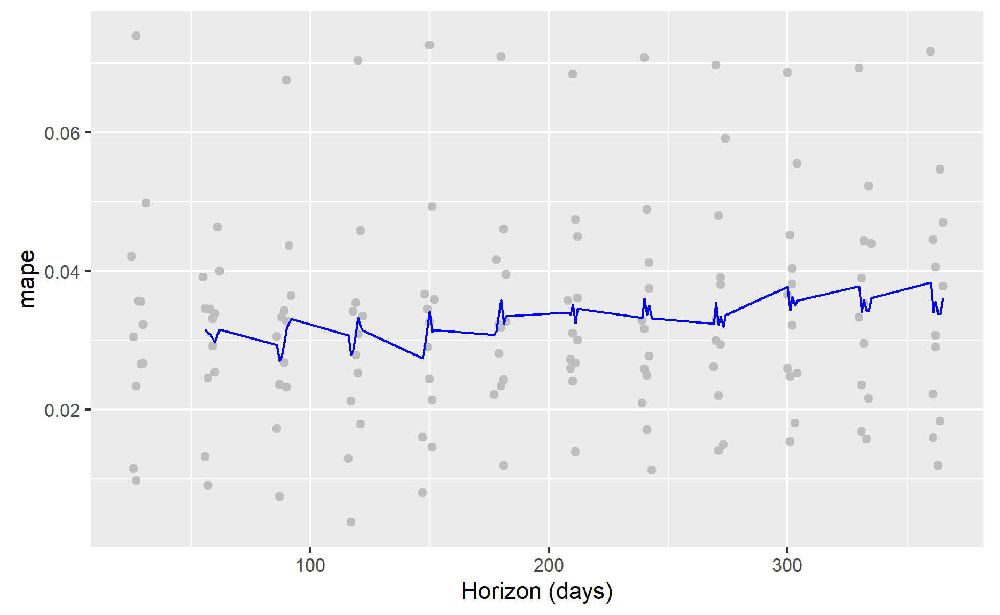
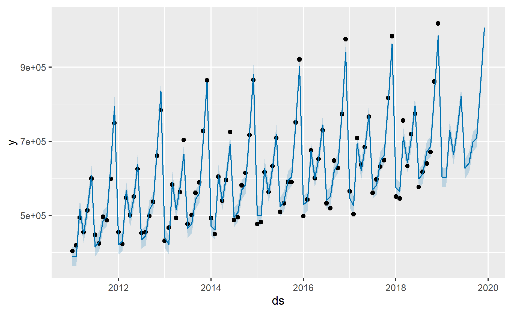
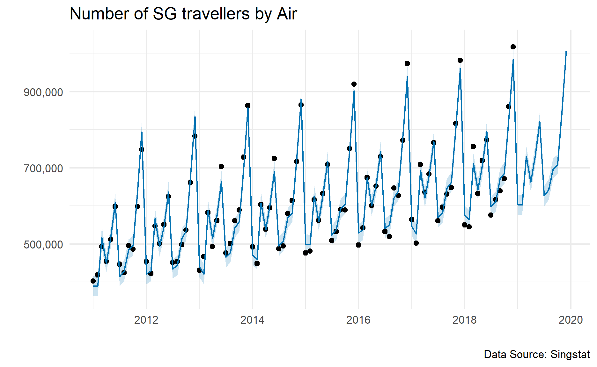
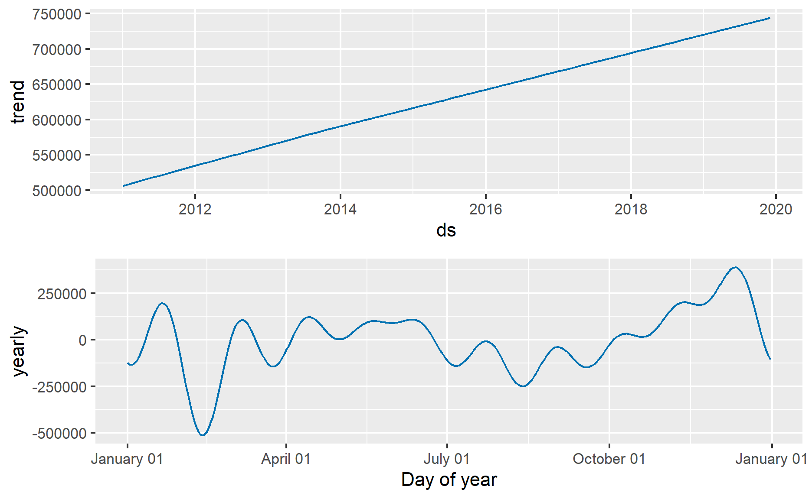

In this post, I will be exploring Prophet.
When I first came across Prophet, I thought the article was referring to the actuarial software until I realised it was for time series forecasting.
Funny enough, the actuarial software Prophet also helps actuaries perform forecasting. Just that the forecasting from the software is more for insurance cashflows.

Photo by Ross Sneddon on Unsplash
Nevertheless, in this post, I will exploring Prophet, i.e. one of the time series forecasting method.
What is Prophet?
Prophet is an open-source library developed by Facebook.
This method works best with time series that have strong seasonality and several seasons of historical data (Hyndman and Athanasopoulos, n.d.).
The formula can be written as follows:
\[y_t = g(t) + s(t) + h(t) + \epsilon_t\]
Where
\(g(t)\) is the piecewise-linear trend (or “growth term”)
\(s(t)\) is the seasonal pattern
\(h(t)\) is the holiday effects
\(\epsilon_t\) is the white noise error term
Demonstration
Setup the environment
First, I will set up the environment by calling all the relevant packages.
I will be using prophet package to perform the analysis.
pacman::p_load(tidyverse, prophet, readxl)Import the data
In this demonstration, I will be using the data on outbound departures of Singapore residents by air.
The relevant data can be downloaded from Singstat website.

Photo by Tom Barrett on Unsplash
Visualising the chart
Next, I will visualize the time series by using various ggplot functions.
ggplot(tour_df, aes(time, value)) +
geom_line()
From the data, we could see that there is some sort of seasonality within the time series.
Model Building
I will start the time series model.
prophet_fit <-
tour_df %>%
rename(ds = time,
y = value) %>%
prophet()Cross validation
Based on the documentation page, the cross validation can be used to measure the forecast error by using historical data.
To do so, I will be using the cross_validation function from the package.
prophet_cv <-
cross_validation(prophet_fit,
initial = 365 * 6, # training period
period = 30, # how frequent is the estimated value
horizon = 365, # forecast horizon
units = "days")Note that according to the documentation page, the units in the cross_validation function must be some units can be accepted by as.difftime function.
Refer to this link on the units can be accepted by as.difftime function.
We could calculate the performance by passing the cross validation results into performance_metrics function.
performance_metrics(prophet_cv) %>%
as_tibble()# A tibble: 66 x 8
horizon mse rmse mae mape mdape smape coverage
<drtn> <dbl> <dbl> <dbl> <dbl> <dbl> <dbl> <dbl>
1 56 days 490534674. 22148. 20402. 0.0316 0.0314 0.0315 0.714
2 57 days 476254261. 21823. 19937. 0.0310 0.0295 0.0308 0.714
3 58 days 468230873. 21639. 20033. 0.0309 0.0295 0.0309 0.738
4 59 days 448434841. 21176. 20129. 0.0303 0.0327 0.0303 0.786
5 60 days 497390907. 22302. 21052. 0.0297 0.0307 0.0298 0.714
6 61 days 515372967. 22702. 21460. 0.0308 0.0327 0.0309 0.643
7 62 days 496467045. 22282. 21107. 0.0316 0.0335 0.0315 0.679
8 86 days 426855747. 20660. 19469. 0.0293 0.0318 0.0294 0.786
9 87 days 366640702. 19148. 17734. 0.0271 0.0273 0.0270 0.857
10 88 days 374698840. 19357. 18046. 0.0277 0.0299 0.0277 0.857
# ... with 56 more rowsWe could visualize the result by passing the cross validation result to plot_cross_validation_metric function.
plot_cross_validation_metric(prophet_cv, metric = 'mape')
According to the documentation page, the dots show the absolutate percent error for each prediction.
The blue line represents the MAPE, where the mean is taken over a rolling window of the dots.
From the graph, we could see that the forecast errors hover between 3% to 4% most of the times.
The errors seem to increase to somewhere closer to 4% when the predictions are more into the future.
Predictions
Next, I will perform predictions on the time series.
I will first append the future time series to the fitted object.
future <-
make_future_dataframe(prophet_fit,
periods = 12,
freq = "month")If I were to slice the last 12 values from the created object, we can see that its the future values we indicated.
tail(future, 12) ds
97 2019-01-01
98 2019-02-01
99 2019-03-01
100 2019-04-01
101 2019-05-01
102 2019-06-01
103 2019-07-01
104 2019-08-01
105 2019-09-01
106 2019-10-01
107 2019-11-01
108 2019-12-01Then, I will pass the fitted object and created data frame into predict function as shown below.
forecast <-
predict(prophet_fit, future)tail(forecast) ds trend additive_terms additive_terms_lower
103 2019-07-01 733202.8 -105960.52 -105960.52
104 2019-08-01 735406.8 -93436.09 -93436.09
105 2019-09-01 737610.8 -40098.05 -40098.05
106 2019-10-01 739743.8 -31330.35 -31330.35
107 2019-11-01 741947.8 109058.58 109058.58
108 2019-12-01 744080.8 262236.56 262236.56
additive_terms_upper yearly yearly_lower yearly_upper
103 -105960.52 -105960.52 -105960.52 -105960.52
104 -93436.09 -93436.09 -93436.09 -93436.09
105 -40098.05 -40098.05 -40098.05 -40098.05
106 -31330.35 -31330.35 -31330.35 -31330.35
107 109058.58 109058.58 109058.58 109058.58
108 262236.56 262236.56 262236.56 262236.56
multiplicative_terms multiplicative_terms_lower
103 0 0
104 0 0
105 0 0
106 0 0
107 0 0
108 0 0
multiplicative_terms_upper yhat_lower yhat_upper trend_lower
103 0 598624.5 652264.8 733136.2
104 0 615850.6 670457.0 735325.8
105 0 672243.8 725140.5 737510.9
106 0 684682.3 735289.8 739627.2
107 0 825852.8 876430.7 741808.9
108 0 979468.0 1029608.0 743918.2
trend_upper yhat
103 733264.1 627242.2
104 735484.7 641970.7
105 737706.3 697512.8
106 739859.6 708413.4
107 742087.2 851006.4
108 744240.8 1006317.3Visualization
To visualize the time series, we could pass the fitted object and forecasted values into plot function.
plot(prophet_fit, forecast)
As the generated plot object is a ggplot object as shown below, we could add on ggplot functions to further modify the graph.
plot(prophet_fit, forecast) +
scale_y_continuous(labels = scales::comma) +
xlab("") +
ylab("") +
labs(title = "Number of SG travellers by Air",
caption = "Data Source: Singstat") +
theme_minimal()
Alternatively, we could visualize the interactive graph by passing the fitted object into dyplot.prophet function.
dyplot.prophet(prophet_fit, forecast)Decompose the time series
prophet_plot_components function can help us to break the forecast into trend, weekly seasonality, and yearly seasonality.
prophet_plot_components(prophet_fit,forecast)
From the graph, we note that the number of Singapore residents going overseas through air has increased over the years.
Conclusion
That’s all for the day!
Thanks for reading the post until the end.
Feel free to contact me through email or LinkedIn if you have any suggestions on future topics to share.
Refer to this link for the blog disclaimer.
Till next time, happy learning!

Photo by Maximalfocus on Unsplash